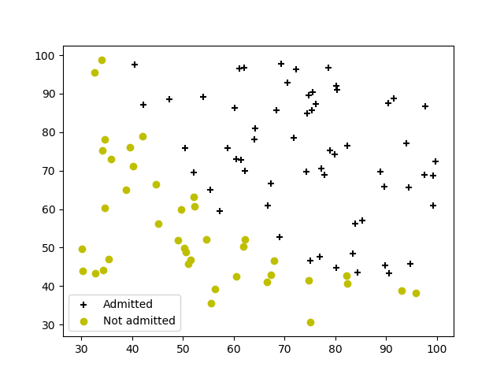
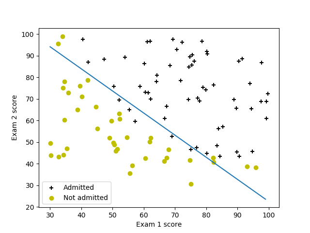
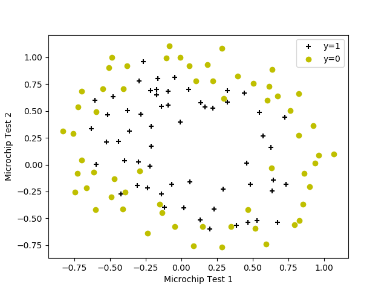
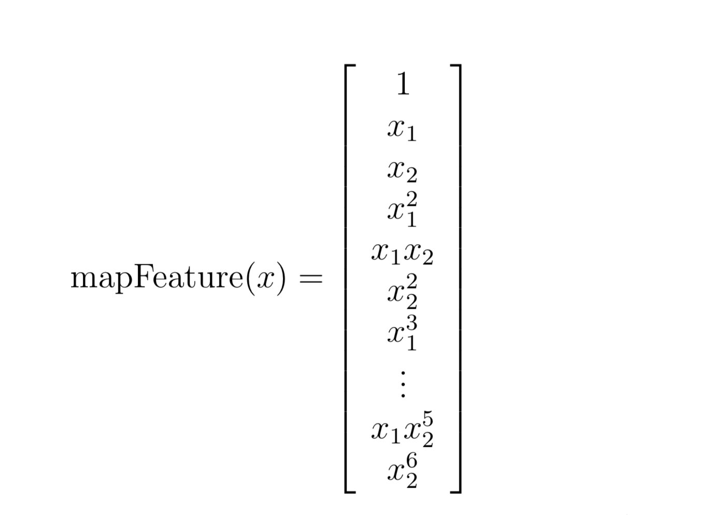
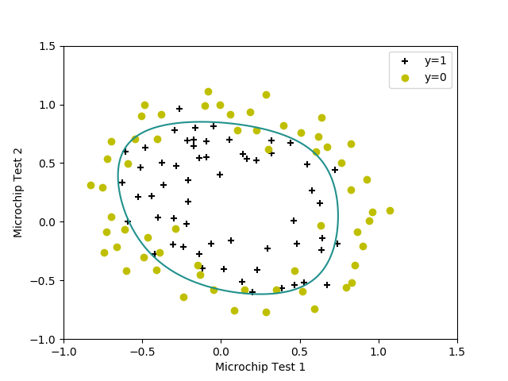
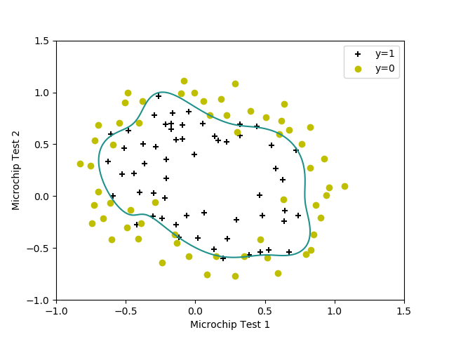
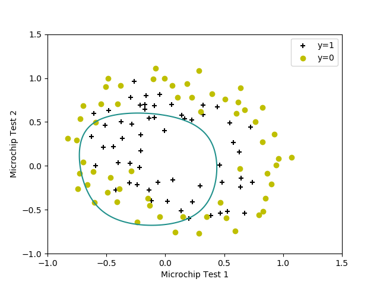

Logistic Regression
Visualizing the data
Read the data
采用pandas.read_csv()方法来读取ex2data1.txt文件。1
2
3import pandas as pd
data = pd.read_csv('ex2data1.txt', names=['exam1', 'exam2', 'admitted'])
1 | # 查看data的前几项 |
1 | exam1 exam2 admitted |
1 | # 查看data的结构 |
1 | exam1 exam2 admitted |
Plotting the scatter plot
绘制散点图，需将0和1两种情况分开绘制。故需将原数据依照admitted的数据（0/1）将数据进行拆分为positice和negative。
1 | # 绘制散点图 |
散点图如下所示：

Implementation
Hypothesis and Sigmoid
logistic regression hypothesis is defined as:
$h_\theta(x)=g(\theta^Tx)$
The sigmoid function is defined as:
$g(z)=\frac{1}{1+e^{-z}}$1
2
3
4import numpy as np
def sigmoid(z):
return 1./(1 + np.exp(-z))
Cost function and gradient
the cost function in logistic regression is:
$J(\theta)=\frac{1}{m}\displaystyle\sum^{m}_{i=1}{[-y^{(i)}log(h_\theta(x^{(i)}))-(1-y^{(i)}log(1-h_\theta(^{(i)}))]}$
the gradient of the cost is a vector of the same length is defined as follows:
$\frac{\partial{J(\theta)}}{\partial{\theta_j}}=\frac{1}{m}\displaystyle\sum^{m}_{i=1}(h_\theta(x^{(i)}-y^{(i)})x_j^{(i)}$1
2
3
4
5
6
7
8
9def costFunction(theta, X, y):
h = sigmoid(np.dot(X, theta))
J = (-np.dot(y,np.log(h)) - np.dot((1 - y),np.log(1-h))) / len(y)
return J
def gradient(theta, X, y):
h = sigmoid(np.dot(X, theta))
grad = np.dot(X.T, h - y) / len(y)
return grad.flatten()
Learning parameters using minimize
使用scipy.optimize中的minimize来代替Matlab/Octave中的minunc，去学习找到让costFunction最小的$\theta$。
查看op.minimize()方法的信息。1
2import scipy.optimize as op
print(np.info(op.minimize)
1 | minimize(fun, x0, args=(), method=None, jac=None, hess=None, hessp=None, |
通过以上可知：
- fun：为costFunction，costFunction的参数值theta必须在第一位；
- x0：为$theta$，即所需要学习的参数值；
- args：为(X, y)，是一个元组；
- method：为可选择的方法；
- jac：为梯度函数
1 | Result = op.minimize(fun = Fun.costFunction, |
最后，所得结果为:1
2
3
4
5
6
7
8 fun: 0.20349770158947492
jac: array([9.32681149e-09, 1.15776343e-07, 4.86078485e-07])
message: 'Local minimum reached (|pg| ~= 0)'
nfev: 36
nit: 17
status: 0
success: True
x: array([-25.16131854, 0.20623159, 0.20147149])
costFunction的值为0.203，向量$\theta$为x。
Evaluating logistic regression
For a student with an Exam 1 score of 45 and an Exam 2 score of 851
2
3
4def predict(X,theta):
return sigmoid(theta[0] + theta[1] * X[0] + theta[2] * X[1])
print(Fun.predict([45,85],theta))
所得结果为：0.7762906217710582
Plot the DecisionBoundary
1 | def plotDecisionBoundary(theta): |
拟合结果为：

Regularized Logistic Regression
Visualizing the data
Read the data
采用pandas.read_csv()方法来读取ex2data2.txt文件。1
2
3import pandas as pd
data = pd.read_csv('ex2data2.txt', names=['test1', 'test2', 'accepted'])
Plotting the scatter plot
同上1
2
3
4
5
6
7
8
9
10
11
12
13
14
15
16# 绘制散点图
import matplotlib.pyplot as plt
positive = data[data.accepted.isin(['1'])]
negative = data[data.accepted.isin(['0'])]
plt.scatter(positive['test1'], positive['test2'], marker='+', c='black',
label='y=1')
plt.scatter(negative['test1'], negative['test2'], marker='o', c='y',
label='y=0')
plt.xlabel('Microchip Test 1')
plt.ylabel('Microchip Test 2')
plt.legend()
plt.show()
散点图如下图所示：

Feature mapping
拟合这个散点图最好创造一个更高维度假设函数（Hypoththesis），如下图：
1
2
3
4
5def mapFeature(X):
for i in range(2,7):
for j in range(0, i + 1):
X = np.c_[X, np.power(X[:, 1],i - j)*np.power(X[:, 2], j)]
return X
对ex2data2中数据映射为28维度，结果如下：1
2
3
4
5
6
7
8
9
10
11
12
13[[ 1.00000000e+00 5.12670000e-02 6.99560000e-01 ... 6.29470940e-04
8.58939846e-03 1.17205992e-01]
[ 1.00000000e+00 -9.27420000e-02 6.84940000e-01 ... 1.89305413e-03
-1.39810280e-02 1.03255971e-01]
[ 1.00000000e+00 -2.13710000e-01 6.92250000e-01 ... 1.04882142e-02
-3.39734512e-02 1.10046893e-01]
...
[ 1.00000000e+00 -4.84450000e-01 9.99270000e-01 ... 2.34007252e-01
-4.82684337e-01 9.95627986e-01]
[ 1.00000000e+00 -6.33640000e-03 9.99270000e-01 ... 4.00328554e-05
-6.31330588e-03 9.95627986e-01]
[ 1.00000000e+00 6.32650000e-01 -3.06120000e-02 ... 3.51474517e-07
-1.70067777e-08 8.22905998e-10]]
Cost function and gradient
the regularized cost function in logistic regression is：
$J(\theta)=\frac{1}{m}\displaystyle\sum^{m}_{i=1}{[-y^{(i)}log(h_\theta(x^{(i)}))-(1-y^{(i)}log(1-h_\theta(^{(i)}))]}+\frac{\lambda}{2m}\displaystyle\sum^{n}_{j=1}\theta^2_j$
我们不需要对$\theta_0$进行正则化。
The gradient of the cost function is a vector where the $j^{th}$ element is defined as follows:
$\frac{\partial{J(\theta)}}{\partial{\theta_j}}=\frac{1}{m}\displaystyle\sum^{m}_{i=1}(h_\theta(x^{(i)}-y^{(i)})x_j^{(i)}\qquad for\quad j=0$
$\frac{\partial{J(\theta)}}{\partial{\theta_j}}=\frac{1}{m}\displaystyle\sum^{m}_{i=1}(h_\theta(x^{(i)}-y^{(i)})x_j^{(i)}++\frac{\lambda}{m}\theta_j\qquad for\quad j\geq1$
1 | def costFunctionReg(theta, X, y, l = 1): |
Learning parameters using minimize
同上1
2
3
4# 此处lambda取1
Result = op.minimize(fun = Fun.costFunctionReg,
x0 = theta, args = (X, y, 1), method = 'TNC',
jac = Fun.gradientReg)
1 | fun: 0.5290027299645224 |
Plotting the decision boundary
我们将分类器的预测结果在一个均匀间隔的网格上绘制出非线性决策边界，然后绘制出预测值从y = 0变化到y = 1的等值线图
1 | def plotDecisionBoundaryReg(theta): |
$\lambda=1$的拟合结果为：

$\lambda=0$的拟合结果为：

我们发现$\lambda=0$已经过拟合
$\lambda=100$的拟合结果为：

我们发现$\lambda=100$已经欠拟合